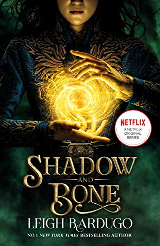
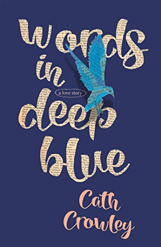
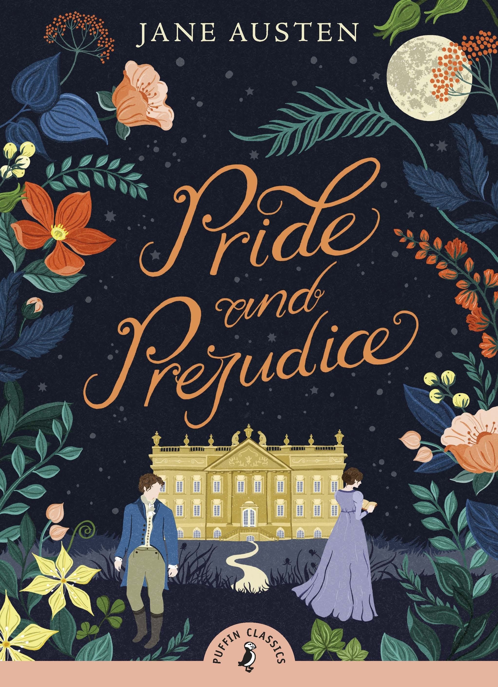

Look at our selection of romance books that we had to read for our reading circles! Oh my god why did i do this
Shadow and Bone - Leigh Bardugo
-------------------------------------
We open on a prologue, in which the narrator speaks in third person to describe a little boy and a little girl, immediately establishing that our female protagonist is fragile and quirky. Then we enter Chapter 1, where everything is in first person because we are now looking at the world from the perspective of our not-like-the-other-girls-scrawny-yet-fiesty main character Alina Starkov. We find that she is a mapmaker in the army, and she is about to enter the Shadow Fold, an expanse of darkness created by some evil guy a long time ago. On the Fold, Alina witnesses many deaths. But soon enough, she finds out that there is a hidden power brewing inside her. In a world of magic-wielding first-rank soldiers, our main character must discover more about herself and the mysterious Darkling who has taken an interest in her, all with her childhood friend Mal at her side. im tired
Read by Ashleigh
Check AvailabilityWords in Deep Blue - Cath Crowley
-------------------------------------
Words in Deep Blue is a contemporary romance book that follows the perspectives of two old friends finding each other in a second-hand bookstore. It has a beautiful, soft feeling to the story as the characters' relationship evolves, traversing the complicatedness of healing from loss in many different ways. It's a book where sitting in the garden in the sun gives you lifelong memories :) READ IT.
Read by Amber
Check AvailabilityPride and Prejudice - Jane Austen
-------------------------------------
Pride and Prejudice is a classic novel featuring Lizzy and her evil nemesis Mr Darcy. He just insults her and um she falls for him? What? If you like enemies to lovers and household drama when people's status is more important than love, then this is for you! Idk what else to put here lol
Read (barely) by Emma
Check Availability